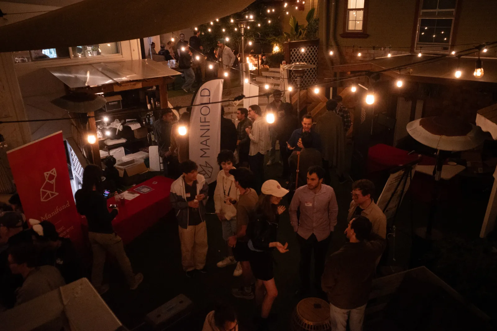

Hi, I am Carolanne Jiang, an undergraduate student in philosophy at the University of Chicago.
Manifest is an annual conference / festival about prediction markets and forecasting, in 2026, I was one of the 2-3 core organizers responsible for making the conference happen.
Speakers & guests included Owain Evans, Chad Jones, Scott Alexander, Patrick Mckenzie, Robin Hanson, Noam Brown, Danielle Fong, Allison Duettman, David Shor, Emmett Shear, Eliezer Yudkowsky, Kenny Easwaran, and more.
Some of my favorite sessions included The Train to Crazytown with Richard Chappell; Debate on whether prediction markets are good for anything with Marcus Abramovich and Stephen Grugett; Discussion on Decision Theory with Eliezer Yudkowsky & Kenny Easwaran.
See an incomplete write-up of everything I’ve learned from running Manifest here; For references, talk to Austin Chen.

